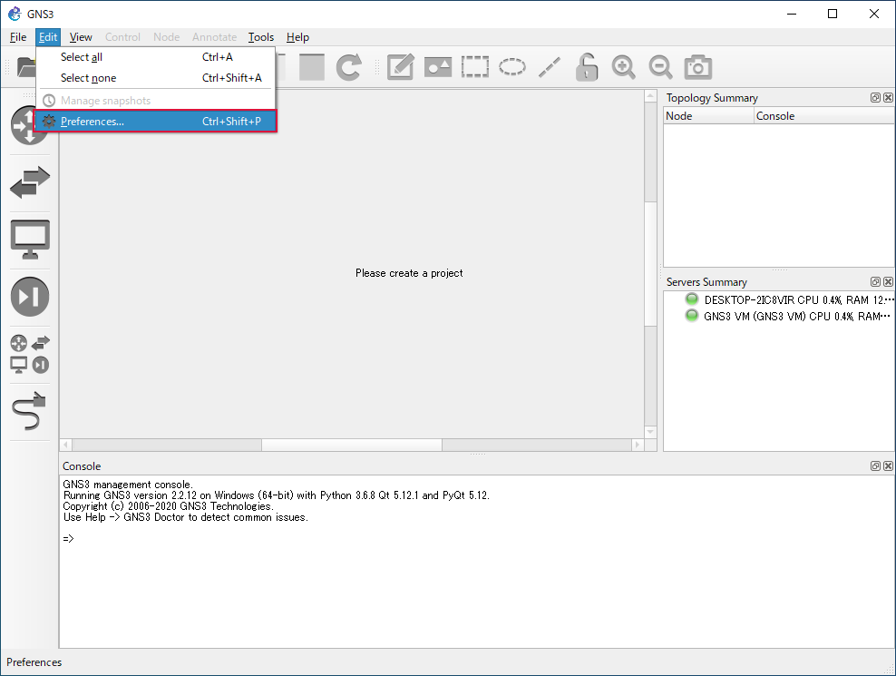

End Device の追加：VMware Player 編¶
追加する仮想マシンの準備¶
GNS3 に追加する仮想マシンは他の VMware Workstation Player 上の仮想マシンと同様にインストールします。ツールなどが必要な場合は、それらもインストールします。
今回追加する仮想マシンは Ubuntu Japanese Team がリリースしている「 Ubuntu 20.04 LTS 日本語 Remix 」です。
準備¶
追加する仮想マシンのネットワークインターフェースは VMnet2 ～ VMnet19 （ VMnet8 は除く）のいずれかに紐づける必要があります。 VMware Workstation Player はデフォルトで紐づけ先の VMnet が有効になっていないため GNS3 側で有効にします。
Edit をクリック
Preferences… をクリック

VMware をクリック
Advanced local settings をクリック
Configure をクリック
VMnet2 ～ VMnet19 （ VMnet8 は除く）を有効化中
OK をクリック
設定終了
仮想マシンの追加¶
準備した仮想マシン を GNS3 に追加します。
VMware Workstation Player¶
VMware Workstation Player で仮想マシンのネットワークインターフェースを VMnet2 ～ VMnet19 （ VMnet8 は除く）のいずれかに紐づけます。今回は VMnet2 に紐づけました。
GNS3¶
Edit をクリック
Preferences… をクリック
VMware VMs をクリック

New をクリック
Next をクリック
VM list のプルダウンリストから追加する仮想マシンを選択
↓
Finish をクリック
Edit をクリック
Network をクリック
Allow GNS3 to override non custom VMware adapter をチェック
OK をクリック
OK をクリック
Browse End Devices をクリック
追加した仮想マシンを確認
追加した仮想マシンを使う¶
追加した仮想マシンは他のオブジェクトと同様にドラッグ＆ドロップでネットワーク図に追加できます。 ウォークスルー で作成したネットワーク図から PC1 を削除し、追加した仮想マシン（ Ubuntu20.04.1LTS ）を配置しました。
すべてのオブジェクトの電源を ON にしました。

追加した仮想マシンの電源が ON になると自動的に起動します（起動に時間を要します）。
↓
仮想マシンを作成した時点のネットワーク設定なので、ネットワーク接続に失敗しました。ネットワーク図内の環境に合わせて手動で IP アドレスを設定します。
PC2 から仮想マシンに ping コマンドの実行結果です。疎通できています。
同様に仮想マシンから PC2 へ ping コマンドの実行結果です。疎通ができています。
ネットワーク図上の仮想マシンの電源を OFF にすると、仮想マシンは自動でシャットダウンします。